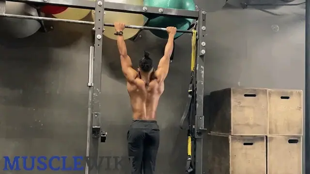
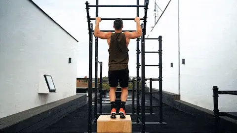
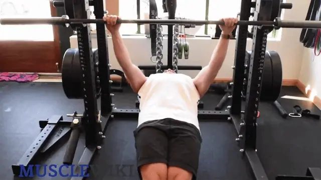
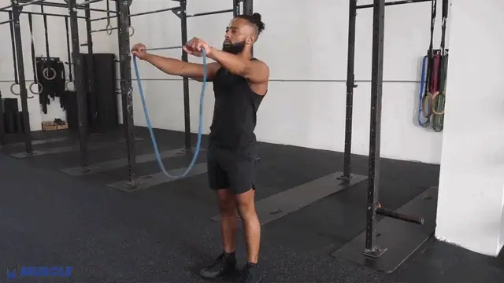
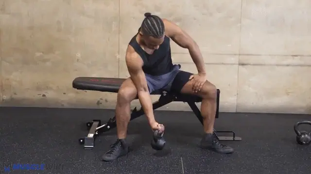
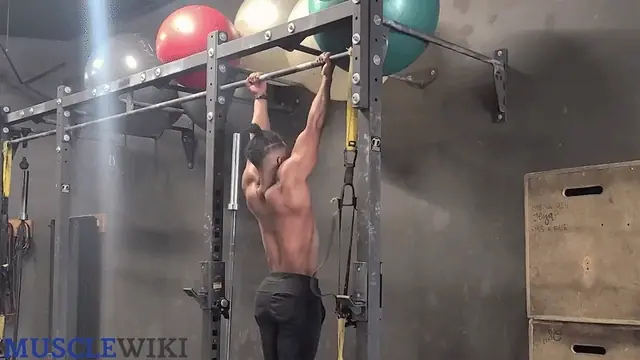
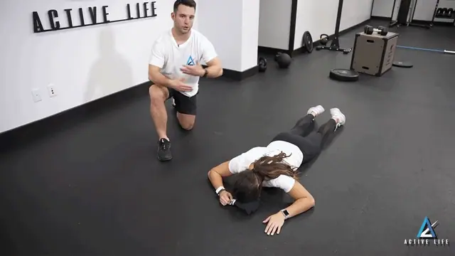
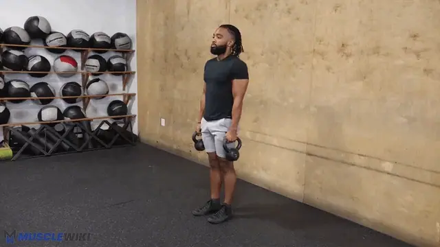

-


1 Pull-ups, Overhand
3× (band-assisted or negatives)
Lats + Mid-Back + Biceps
Feel: Lats and upper back driving; full hang at the bottom.
How to (pick your current level)
- Negatives: jump/step to the top (chin over bar), lower as slowly as possible (aim 5s). 3×3-5.
- Band-assisted: loop a resistance band over the bar and under your knees/feet for assistance. 3×5-8.
- Full pull-ups: dead hang → pull chin over bar → control down. 3×AMRAP.
Key cue: start from a full dead hang each rep, pull the elbows down and back, no kipping. This overhand (pronated) grip biases the lats and upper back — the underhand chin-up (biceps) is your Pull 2 vertical pull.
-

2 Inverted Rows (TS900 bar)
3×8-12
Lats + Mid-Back + Biceps (horizontal pull)
Feel: Shoulder blades squeezing together.
How to
- Set the bar at hip height, lie under it, grab it (now you can choose width + grip)
- Body straight from heels to head, pull chest to bar, squeeze shoulder blades, lower 2s
- Angle controls difficulty: more horizontal = harder; feet elevated (on a chair) = harder still
Notes
Grip note: alternate overhand (back emphasis) and underhand (lat/biceps) between sets — something the treadmill handles wouldn't let you do.
-

3 Band Pull-Aparts
3×15-20
Rear Delts (isolation)
Feel: Burn in the back of the shoulders; shoulder blades pinching.
How to
- Band at shoulder height, arms straight in front
- Pull the band apart out to your sides, squeeze at full extension, slow return
- Keep arms STRAIGHT, and don't let the shoulders shrug up — that's the cue you've been working on; it's the right challenge
-

4 Concentration Curls
3×12-15
Biceps — Short Head (peak contraction)
Feel: Hard squeeze at the top; no cheating — the elbow is braced.
How to
- Seated, elbow braced on inner thigh, curl with full ROM
- Squeeze 1s at the top, lower slowly (4s eccentric), full stretch at the bottom
Notes
Good finisher for arm growth. When 3×15 with a 4s eccentric feels easy, you need heavier than your 3 kg dumbbells → adjustable dumbbells.
-

1 Chin-ups, Underhand
3×5-8 (band-assisted or negatives)
Biceps + Lats (vertical pull, supinated)
Feel: Biceps loaded hard; full stretch at the dead hang.
How to
- Underhand (supinated) grip ~shoulder-width, hang fully at the bottom
- Pull until your chin clears the bar, driving the elbows down, control the descent
- Same regressions as pull-ups — negatives (5s lower) or band-assisted, building to full reps
Notes
Why both grips: chin-ups bias the biceps (and still hit the lats); the overhand pull-ups on Pull 1 bias the lats/back. Same bar, different targets — that's why one grip lives on each day. Chin-ups are usually the grip you'll land your first unassisted rep on.
-
2 Inverted Rows (TS900 bar)
3×8-12
Lats + Mid-Back + Biceps (horizontal pull)
Feel: Shoulder blades squeezing together.
How to
- Set the bar at hip height, lie under it, grab it (now you can choose width + grip)
- Body straight from heels to head, pull chest to bar, squeeze shoulder blades, lower 2s
- Angle controls difficulty: more horizontal = harder; feet elevated (on a chair) = harder still
Notes
Same as Pull 1 — see above. Try the other grip from what you used on Pull 1, or elevate the feet for progression.
-

3 Prone Y-T-W Raises
3×8 each position
Mid-Back + Lower Traps + Rear Delts
Feel: Burning between and below the shoulder blades. Looks easy — isn't.
How to
- Face-down on the floor, arms extended
- Y: raise arms at 45° overhead (thumbs up), hold 2s, lower
- T: raise straight out to the sides, hold 2s, lower
- W: elbows bent, pull into a W squeezing the blades, hold 2s, lower
- 8 of each = 1 set. Use the 1.5 kg load when you can.
Notes
Why it's only here (once/week): it's slow and you flagged it eats time. Once a week is plenty for this detail work — the rows cover the mid-back the rest of the week. Keep it SLOW; momentum kills it.
-
No animation yet 4 Incline Dumbbell Curls
3×12-15
Biceps — Long Head (stretched position)
Feel: Deep stretch at the bottom of each rep — the money range for biceps growth.
How to
- Lean back against a couch/the TS900 backrest (~45–60° recline), arms hanging straight down
- Curl up, squeeze, lower slowly (3s), let the arms fully extend at the bottom
- Keep elbows behind the torso throughout
Notes
Use a 3 kg dumbbell per hand. This is the gold-standard long-head exercise — when 3×15 with a slow eccentric feels easy, it's the first place you'll want heavier (adjustable) dumbbells.
-

+ Band Shrugs
2–3×15-20
Upper Traps (optional)
Feel: Top of the shoulders burning; squeeze hard at the top.
How to
- Stand on the band, hold the ends at your sides with little slack (your band is strong — that's fine)
- Shrug straight up toward your ears, hold 2s, lower slowly
Notes
Now optional, since chin-ups were added. Upper traps are often already tight/overactive in desk workers, and the rows + Y-T-W already hit them — include this only if you specifically want more trap work, otherwise skip to keep the session short.
About pull workout
Two short pull sessions per week. The big upgrade: the TS900 power tower finally adds vertical pulling — the single biggest gap in the old plan — and gives you a proper, fixed bar for inverted rows instead of the treadmill handles (so you can vary grip and width now). You do a vertical pull on both days with different grips: overhand pull-ups on Pull 1 (lat/back emphasis) and underhand chin-ups on Pull 2 (biceps emphasis) — same bar, different targets. Inverted rows and a biceps curl also appear both days (anchors). Biceps are trained both days on purpose — you want the arms to grow.
Time Breakdown
Pull 1
| # | Exercise | Sets × Reps | Rest | Time |
|---|---|---|---|---|
| 1 | Pull-ups (assisted/negatives) | 3×3-8 | 90s | ~5.5 min |
| 2 | Inverted rows | 3×8-12 | 90s | ~5 min |
| 3 | Band pull-aparts | 3×15-20 | 45s | ~3.5 min |
| 4 | Concentration curls | 3×12-15 | 60s | ~3.5 min |
| — | Total (+ optional dead hang) | ~18 min |
Pull 2
| # | Exercise | Sets × Reps | Rest | Time |
|---|---|---|---|---|
| 1 | Chin-ups (assisted/negatives) | 3×3-8 | 90s | ~5.5 min |
| 2 | Inverted rows | 3×8-12 | 90s | ~5 min |
| 3 | Prone Y-T-W | 3×8 each | 60s | ~5 min |
| 4 | Incline dumbbell curls | 3×12-15 | 60s | ~4 min |
| + | Band shrugs (optional) | 2–3×15-20 | 45s | +2-3 min |
| — | Total | ~20 min |
Progression Roadmap
| Exercise | Now | Next | Later |
|---|---|---|---|
| Pull-ups (overhand) | Negatives / band-assisted | Full pull-ups 3×3-5 | Weighted (backpack/vest) |
| Chin-ups (underhand) | Negatives / band-assisted | Full chin-ups 3×3-5 | Weighted |
| Inverted rows | Bar at hip height | More horizontal / feet elevated | Weighted, or one-arm progressions |
| Band pull-aparts | 3×15-20 | 3s tempo each way | Face pulls / reverse flyes (with dumbbells) |
| Concentration curls | 3 kg dumbbell, 4s eccentric | Heavier dumbbell (5–8 kg) | Hammer curls |
| Prone Y-T-W | 1.5 kg | 2–3 kg | 5 kg |
| Incline curls | 3 kg dumbbell/hand | Heavier dumbbell/hand | Heavier; chin-ups for vertical biceps |
| Band shrugs | Band | Heavier dumbbell shrugs / farmer carries | — |
Quick Reference
Lats (vertical) → Pull-ups, overhand (Pull 1) → weighted
Biceps (vertical) → Chin-ups, underhand (Pull 2) → weighted
Lats/back (horiz) → Inverted rows (both days)
Mid-back / l.traps → Prone Y-T-W
Rear delts → Band pull-aparts → face pulls
Upper traps → Band shrugs (optional)
Biceps (short) → Concentration curls
Biceps (long) → Incline curls
Garmin Connect Setup
Garmin Connect Setup
Synced to Garmin Connect with uv run garmin/sync.py push. Exercise names match the cards above; each one's Garmin exercise is in garmin/exercises.yaml, and the watch notes are built from the card's dose and cues.
Pull 1
| Step | Exercise | Target | Rest |
|---|---|---|---|
| Repeat ×3 | Pull-ups, Overhand | 5 | 90s |
| Repeat ×3 | Inverted Rows (TS900 bar) | 8 | 90s |
| Repeat ×3 | Band Pull-Aparts | 15 | 45s |
| Repeat ×3 | Concentration Curls | 12 | 60s |
Pull 2
| Step | Exercise | Target | Rest |
|---|---|---|---|
| Repeat ×3 | Chin-ups, Underhand | 5 | 90s |
| Repeat ×3 | Inverted Rows (TS900 bar) | 8 | 90s |
| Repeat ×3 | Prone Y-T-W Raises | 8 each | 60s |
| Repeat ×3 | Incline Dumbbell Curls | 12 | 60s |
| Repeat ×2 | Band Shrugs | 15 | 45s |